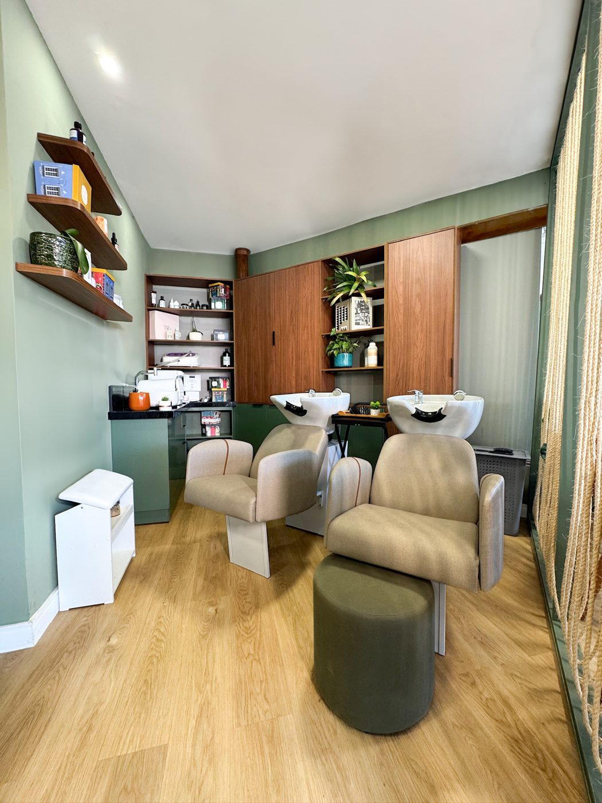

Olhar fotográfico
Luz, composição e tempo certo
Cada imagem é pensada como fotografia — inclusive quando é vídeo. Direção de luz, enquadramento e o momento exato do clique.
Conheça a fotografia →Fotografia · Filmagem · Estratégia de marca
Fotografia e filmagem com olhar autoral para hotéis, restaurantes, casamentos, marcas e artistas. Imagens que fazem o público querer estar lá.
É esse olhar que transforma um lugar, um prato ou um sim em imagem que as pessoas lembram — e desejam viver.
Olhar fotográfico
Cada imagem é pensada como fotografia — inclusive quando é vídeo. Direção de luz, enquadramento e o momento exato do clique.
Conheça a fotografia →Experiência
Mais de 35 projetos entre resorts, restaurantes, casamentos, shows, marcas e artistas. Sabemos ler o ambiente e trabalhar sem atrapalhar.
Ver trabalhos →Disponibilidade
Base em Imbassaí, no Litoral Norte da Bahia, e atendimento em todo o Brasil. Agenda que acompanha a sua: de dia, à noite e nos fins de semana.
Consultar uma data →01Trabalhos selecionados
Toque em um trabalho para ver a história completa, todas as fotos e os vídeos.





02Serviços
Contrate a fotografia e a filmagem de um momento, ou tenha a Luah ao lado da sua marca, cuidando da imagem e da estratégia de ponta a ponta.
Retratos, produtos, gastronomia, espaços e eventos — com direção de luz e de cena em cada clique.
Ensaios · Produto · Gastronomia · Arquitetura e hospedagemSaiba mais →IIFilmes de eventos, casamentos, shows, hospedagens e marcas — do registro completo do dia a peças institucionais e para redes.
Eventos · Casamentos · Institucional · Redes sociaisSaiba mais →IIITratamento de cor, edição e finalização com acabamento profissional, para a imagem chegar do jeito que foi sentida.
Tratamento de imagem · Edição · Correção de corSaiba mais →IVPlanejamento, calendário e publicação no Instagram e no TikTok, com a voz e a estética da sua marca em cada post.
Planejamento · Publicação · RelatóriosSaiba mais →VUm olhar de fora para organizar o que a sua marca é, para quem ela fala e por que alguém deveria escolher você.
Posicionamento · Diferenciação · Experiência do clienteSaiba mais →VIAcompanhamento contínuo das ações, campanhas e resultados, para cada mês ter direção — não só postagens.
Campanhas · Datas sazonais · Lançamentos · MétricasSaiba mais →03Em movimento
Toque no alto-falante para ouvir.
Arraste para o lado →
04Processo
Entendemos a sua marca, o seu público e o que você quer que as pessoas sintam.
Definimos o roteiro de imagens, locações, horários de melhor luz e o plano de captação. Nada de improviso no dia.
Fotografamos e filmamos no local, com direção de luz e de cena, e finalizamos com a identidade da sua marca.
Você recebe o material pronto para usar — e, se quiser, cuidamos da publicação e do acompanhamento.
05Como contratar
Pontual
Fotografia e filmagem de um dia ou de um evento — inauguração, show, lançamento, ensaio. Você recebe o material finalizado.
Escopo definido pela duração, pelo local e pelo volume de entrega.
Hospedagem e gastronomia
Fotos e filmes do espaço, da experiência e dos detalhes para site, redes, plataformas de reserva e campanhas — em projeto único ou recorrente.
Formato montado de acordo com a temporada e os canais da sua marca.
Celebração
O dia inteiro, do making of à festa, em fotografia e filme, com o olhar atento para os momentos que passam rápido.
Proposta personalizada depois de conhecer a data, o local e a história do casal.
Estratégia
Diagnóstico de marca, plano de marketing e acompanhamento das ações — com ou sem a nossa produção de imagens.
Formato definido depois de uma primeira conversa.
Conte o que você quer mostrar. Respondemos com o formato ideal e uma proposta sob medida para o seu projeto.
Ou fale direto: (71) 99264-7606 · luahproducao@gmail.com